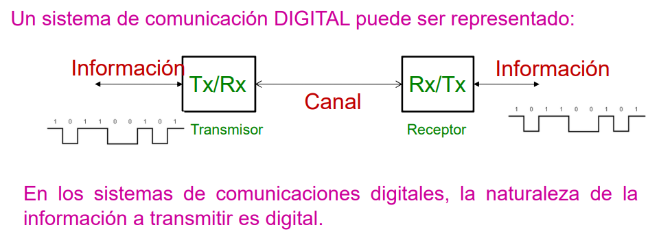
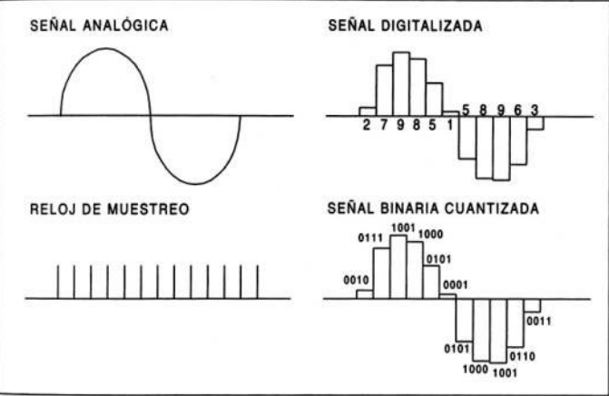
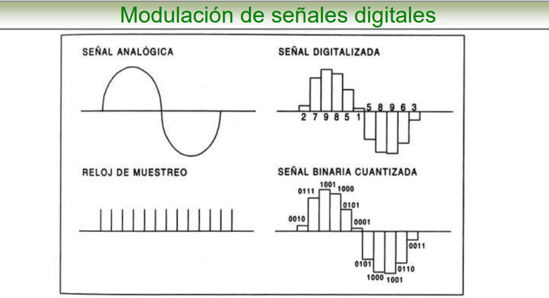
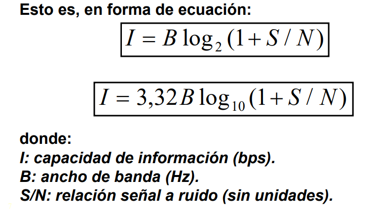

La comunicación digital se basa en la transmición de datos por medio de señales en el espectro electromagnético y que estos al ser recibidos, son decodificados bajos fluctuaciones "binarias" (picos de 5v y tierra, por ejemplo) generando asi una sucesión de pulsaciones que a su vez estos al ser interpretados, generan una información concreta.
Por otra parte la modulación digital, es el proceso por el que los símbolos digitales se transforman en señales compatibles con el canal de comunicaciones. En las modulaciones, la información se modula en base a alguna característica de la portadora. Para enviar información digital, esta se puede modular la amplitud, la frecuencia o la fase de la portadora, en sistemas PAM, FSK y PSK, respectivamente.
Un sistema de comunicación digital puede ser utilizado para transmitir información en formato analógico, siempre que la información previamente sea convertida de un formato al otro, tanto en el Tx como en el Rx.
Vale destacar que; en la actualidad, resulta más conveniente el trabajo con las señales analógicas, una vez que éstas están en formato digital.
Agregando tambien que en formato digital, la información puede ser guardada, modificada, regenerada, es menos susceptible a la interferencia del canal, entre otras cualidades que la hacen mucho más atractiva que en formato analógico.
En sistemas por satélite En sistemas por satélite se usa fundamentalmente la modulación de fase PSK. se usa fundamentalmente la modulación de fase PSK. Un modulador PSK de M fases pone la fase de la portadora en uno de entre M valores dependiendo de la señal moduladora. Un sistema de dos fases se denomina BPSK y uno de cuatro fases QPSK. Cualquier tipo de modulación PSK puede ser “directa” o “diferencial” según la fase de la portadora se determine por el estado de la señal moduladora o por el cambio de estado de la señal moduladora, respectivamente. La fase de la portadora adopta un número finito M de valores. El tiempo de transición más el tiempo durante el que la fase se mantiene constante se denomina “periodo de símbolo” y la onda transmitida se denomina “símbolo”.
antes de continuar con el tema, hay que tener en cuenta que existen determinada multiples tipos de tecnicas en que se modulan las señales; por el momento solo me dedicare a mencionarlas ya que su continedo es muy extenso y son las siguientes:
Por ultimo para culminar con la introduccion, se debe tener en cuenta tambien que existen ciertos terminos que usamos a diarios pero no entendemos su contexto, uno de estos termino son los Bps o Bit Por Segundo que se refiere a la capacidad que tiene un sistema de modular/transmitir información entre dos puntos. Otro termino son los Baudios; que se le conoce como la razon de cambio en la salida del modulador y es igual al reciproco del tiempo de un elemento de señalización de salida y la capacidad de informacion de un sistema de comunicación se mide en base a la capacidad que tenga este de enviar simbolos por dicho sistema por unidad de tiempo, es decir se mide la capacidad de un canal de comunicaciones en base a su ancho de banda y la relacion señal/ruido que este mismo posee
Estos sistemas poseen ciertas ventajas ya que, primero; son mayormente inmunes al ruido, tienen una estructura basica unica hablando de tipos de señales y algoritmos, requieren de pocos circuitos de procesamiento ademas de que estos son mas faciles de manipular en terminos de experimentales.
Se basa en la representacion de dos amplitudes diferentes y de forma binaria donde una de esas es la presencia de señal y la otra se refiere a la ausencia.
La ventaja de esta modulacion es que permite trabajar sobre una sola frecuencia de transmision en vez de tener que lidiar con pulsos que contienen componentes en todas las frecuencias del espectro.
Su recuperacion resulta tambien sencilla ya que solo depende de sincronizar la frecuencia de las señales sinusoidales que sirven de portadoras y regeneradoras dependiendo si se hallan en el modulador o el demodulador. A pesar de las ventajas que ofrece no es uno de los metodos mas utilizados, debido a que para cada frecuencia es necesario realizar un circuito indipendiente, ademas de que solo puede transmitir un solo bit al mismo tiempo en una determinada frecuencia, otro detalle es que lo multiplos de una frecuencia fundamental son inutilizables ademas de ser suceptibles al ruido. Este sistema a pesar de todo es usamos en sistemas de comunicación de fibra optica ya que su forma de transmitir la informacion es muy conveniente para ese entorno